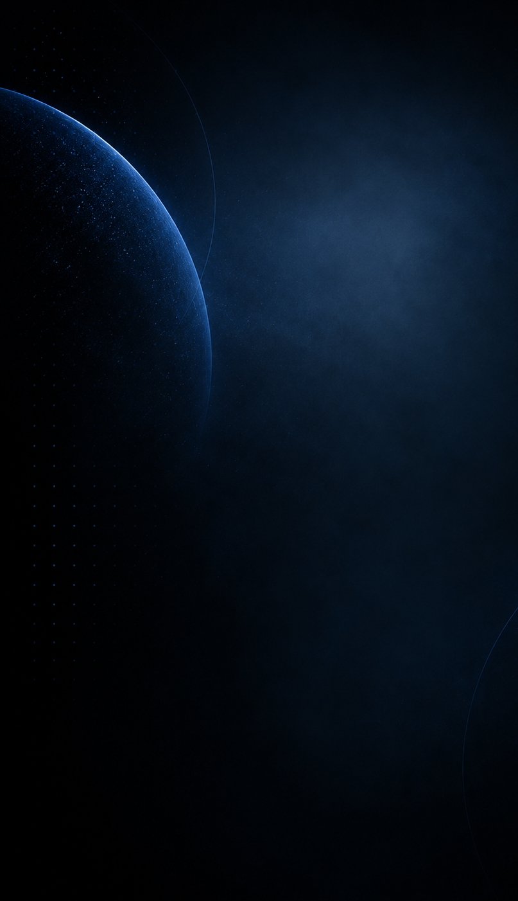
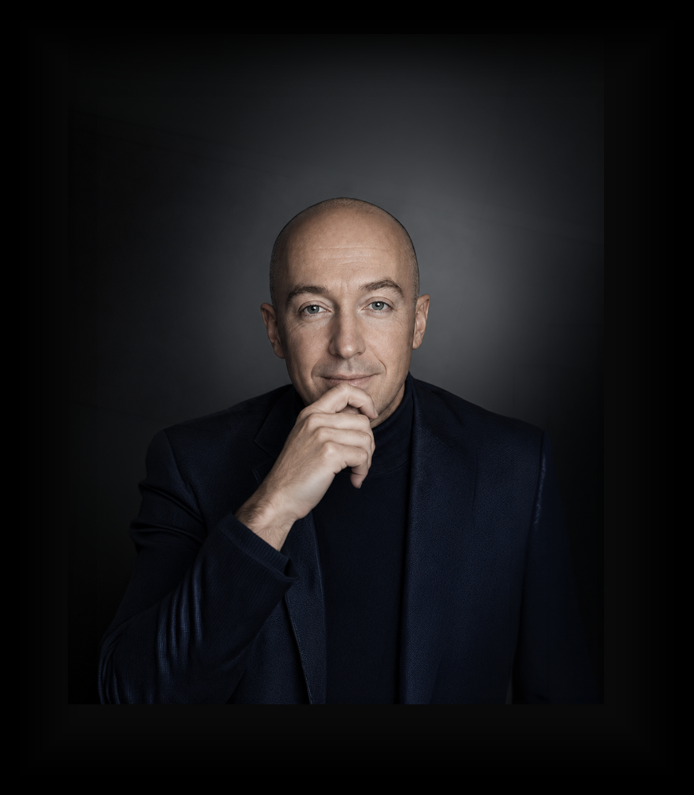
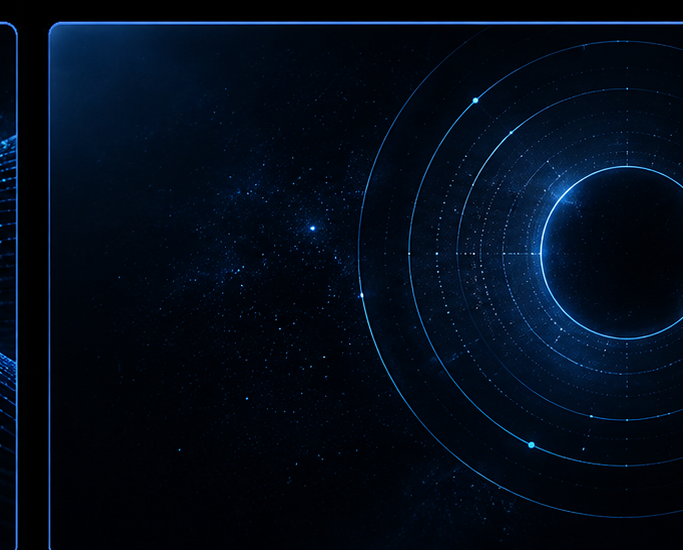

C.T. Holland is the creator of Mind Of Your Own®, an independent body of work examining how language, identity, inherited systems, social influence, technology and institutions shape what people experience as their own thinking.

For more than three decades, Holland has studied and worked with language, belief formation, persuasion, identity, rapport, questioning, generative learning and conscious change. His formal background includes Advanced Investigative Interviewing with Neuro-Linguistic Programming (NLP), NLP Practitioner training at NLP University under Robert Dilts and Judith DeLozier, Ericksonian Hypnosis, Generative NLP Master Practitioner training, and Persuasion Engineering and NLP Trainer’s Training under Richard Bandler and John La Valle.
That training became part of a broader intellectual lineage. Mind Of Your Own® draws from the work of Gurdjieff and P.D. Ouspensky on mechanical behavior and self-observation; Julian Jaynes on the analog self, narratization and interior mind-space; Ernest Becker on mortality, meaning and borrowed power; Joseph Campbell on myth, the hero’s journey and the power of story; Alan Watts on consciousness and the nature of self; the NLP lineage of Bandler, Grinder, Dilts, DeLozier, Satir, Erickson and Perls; Paul Brunton on the Overself; Robert Cialdini on persuasion and influence; and Richard Brodie on memetics.
Mind Of Your Own® brings these influences together with decades of observation, applied communication work, research and writing across psychology, philosophy, political identity, media, institutional behavior, artificial intelligence, memory, persuasion and systems of influence. Rather than asking people what they should believe, the work is designed to help them notice how beliefs are formed, reinforced, performed, defended and sometimes quietly supplied by the systems around them.
Holland’s current framework includes the Five Selves — Embodied, Symbolic, Inherited, Performed and Algorithmic — as well as practical tools for detecting influence, examining language, interrupting automatic responses and separating agreement from allegiance. A central premise of the work is that influence itself is unavoidable. The more useful question is whether we can become conscious of it while it is happening.
Artificial intelligence has made that question more immediate. Systems trained on human language, behavior and creative work are increasingly participating in how people learn, write, decide, organize, create and understand the world. Holland’s AI work focuses on keeping the human at the center: developing practical AI fluency while strengthening judgment, authorship, discernment and the ability to use these systems without quietly surrendering decision-making to them.
His current AI consulting and training work includes AI fluency, human agency, generative learning with AI, creative collaboration and provenance, workforce transition, and practical implementation for individuals and organizations. The work treats AI not simply as software to master, but as a new cognitive environment — one capable of accelerating learning and creative development when the person remains an active participant rather than becoming a passive recipient.
This connects directly back to Holland’s early work in generative learning: learning how to generate better questions, make connections across fields, test assumptions and create new possibilities rather than merely acquire more information. AI expands the scale of that process dramatically. The technology can generate more material, more quickly; the human still has to determine what matters.
Alongside the development of Mind Of Your Own®, Holland’s professional life has included long-term executive work in medical research and healthcare, as well as independent work in writing, communications, music and digital media. Those environments have repeatedly placed him inside systems where language, information, hierarchy, persuasion, creativity and decision-making matter.
The first principle of having a mind of your own is realizing you don’t.
Book, Guide, essays, research and the broader body of work examining authorship, influence, identity, systems and conscious participation.
Explore →Practical AI fluency, human agency, generative learning, creative collaboration, workforce transition and real-world implementation.
Explore →
Interviews and discussions across AI, psychology, culture, entertainment, politics and the forces shaping how people think and participate.
Explore →Outside Mind Of Your Own®, Holland is a recording artist and producer under the name NOAH®. His independent creative work also includes Full Circle Media™ and Sunolicious™. He is the founder of Fairfield and Company LLC.